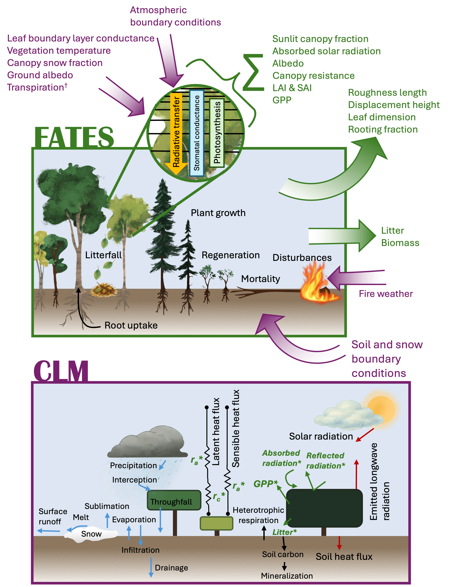
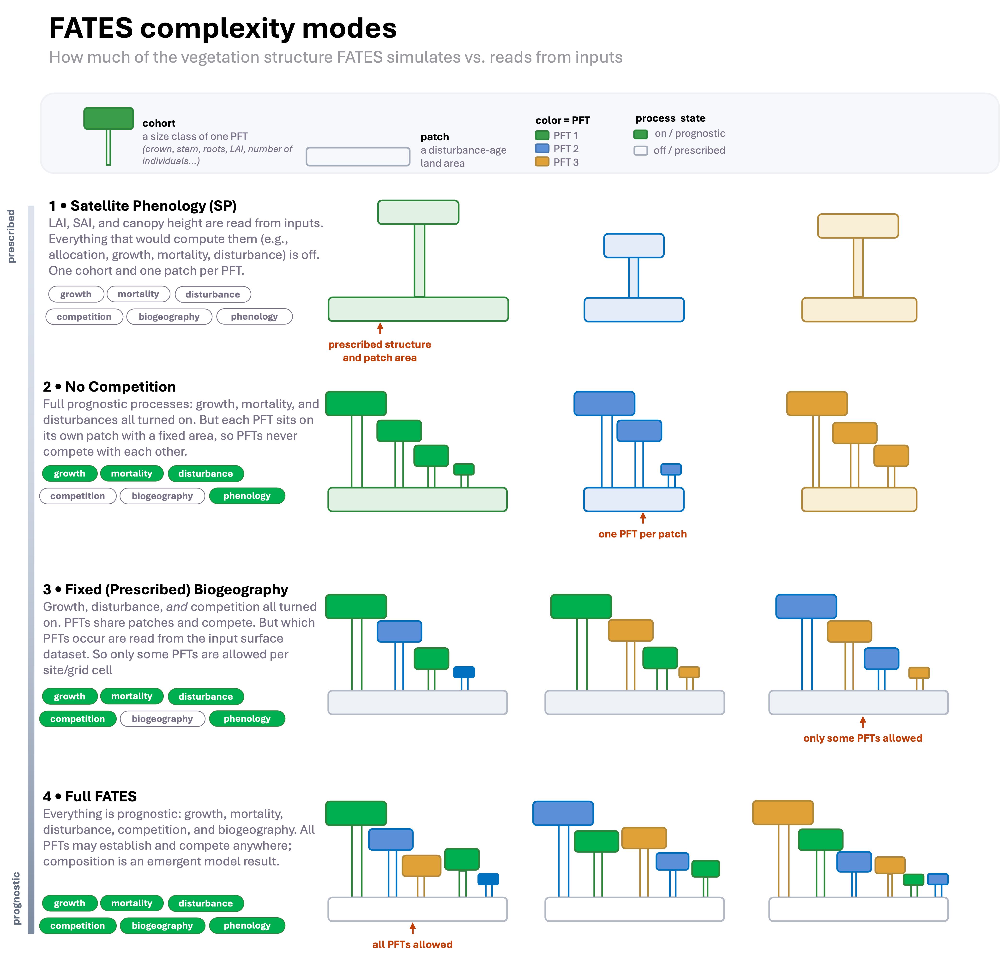

FATES#
CLM-FATES Background#
An important component of representing the land surface is accurately capturing vegetation dynamics and their impact on and interaction with the Earth system. Ecosystem demography models explicitly represent the size structure and successional state of vegetation, through direct simulation of plant growth, mortality, and regeneration. Thus, important vegetation characteristics such as vegetation canopy height, succession, and even potential biome shifts become emergent properties of the model rather than being prescribed.
FATES is the “Functionally Assembled Terrestrial Ecosystem Simulator”. FATES is a cohort model of vegetation competition and co-existence, allowing a representation of the biosphere which accounts for the division of the land surface into successional stages, and for competition for light between height structured cohorts of representative trees of various plant functional types. Individual plants within FATES are grouped into “cohorts” of the same size and PFT, and these cohorts compete for light and resources on individual “patches” that represent different disturbance histories. This type of ecosystem heterogeneity is in contrast to the default vegetation model in CLM, which uses two (sunlit & shaded) “big leaf” canopies per PFT, each on their own patch, with no representation of within-canopy structural heterogeneity or disturbance history.
When CLM is coupled to FATES (“CLM-FATES”), CLM provides site and soil conditions and atmospheric forcing, while FATES simulates plant physiological, vegetation demography, and biogeochemical processes.

Processes simulated in CLM-FATES by each model. Top: processes simulated by FATES when connected to CLM. Arrows in purple indicate conditions supplied to FATES by CLM. Arrows in green indicate conditions supplied to CLM by FATES. Bottom: Processes simulated by CLM when connected to FATES. Green starred variables are simulated and provided by FATES or in the case of aerodynamic resistance (ra) are influenced by the FATES-provided roughness length, displacement height, and leaf dimension. †: Only used in FATES hydraulics mode. From Foster et al. (2026).
FATES Complexity Modes#
Currently, FATES can be run in several different “complexity modes”, where parts of the vegetation model are driven by input data rather than simulated. These modes can be used to facilitate calibration, test features, or run simulations more quickly. These modes are:
Satellite Phenology (SP) mode: this mode is designed to run with leaf area index (LAI), stem area index (SAI), and canopy height (HTOP) as input to the model. As such, all processes that are normally used to calculate these values are turned off (e.g., mortality, allocation, etc.)
No-Competition Mode: this mode runs with full complexity in terms of processes, but places each FATES PFT on its own patch. As such, PFTs do not compete with one another. The patch area of each PFT is determined from the input CLM surface dataset. However, please note that the PFTs in the FATES parameter file do not always map one-to-one with the CLM PFTs on the surface dataset. See the FATES parameter fates_hlm_pft_map on the FATES parameter file for the correct mapping of FATES to CLM PFTs.
Fixed Biogeography Mode: this mode turns off prognostic spatial changes in the distribution of vegetation and instead, the model uses input data to determine which PFTs are present at any given gridcell. The PFT composition in each gridcell is derived from the input CLM surface dataset.
Full FATES Mode: All processes are turned on and PFTs are allowed to grow anywhere.
Note that there are different combinations of no-competition and fixed biogeography mode that will result in different model behaviors. See the FATES namelist documentation for these options.

In the next few examples we’ll explore FATES output